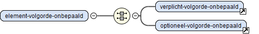

Legenda van de schemadocumentatie
De STOP-schemadocumentatie gebruikt interactieve diagrammen om de XML-structuur te visualiseren en aan te geven hoe de informatie gestructureerd is. Onderstaande diagrammen illustreren de meestgebruikte symbolen en andere onderdelen van zo'n diagram. In de documentatie zijn de diagrammen klikbaar: de benoemde onderdelen linken naar hun eigen definitie.
De naamgevingsconventie van STOP-schema's en de uitleg hieronder gebruikt de prefix xs: voor elementen uit namespace van XML Schema Documents xmlns:xs="http://www.w3.org/2001/XMLSchema".
Element met vaste volgorde
Elementen worden in de diagrammen getekend als een een rechthoek met afgeronde hoeken. Het onderstaande diagram toont een element waarvan de kindelementen een vaste volgorde hebben (middels een xs:sequence). De namen van de kinderen in dit voorbeeld geven de verschillende kardinaliteiten (optioneel, verplicht, meervoudig). De lijnen naar en om verplichte kinderen zijn in de diagrammen dikker dan de lijnen naar en om optionele kinderen. Dit element heeft tevens een attribuutgroep.
Attribuutgroep
Atttributen worden getekend als een rechthoek met links rechte en rechts afgeronde hoeken. Volgens de naamgevingsconventie van STOP-schema's begint de naam van een attribuutgroep (xs:attributeGroup) met de letters ag:
Element met keuze
Onderstaand diagram toont een element waar het content model een keuze (middels een xs:choice) biedt tussen een verplichte-eerste-element enerzijds of een verplichte-tweede-keuze gevolgd door een optionele-derde-keuze anderzijds.
Element met onbepaalde volgorde
Onderstaande diagram toont een element waarin de volgorde van de kindelementen onbepaald is (middels een xs:all)

Deze constructie wordt niet gebruikt in het imop-tekst-schema. In de tekststructuur is de volgorde van de elementen (document order) over het algemeen relevant.
xs:complexType
Een element waarvan het type gedefinieerd is middels een benoemd xs:complexType toont de naam van zijn type onderin de afgeronde rechthoek en toont tevens het model van dat complexType:
Het complexType zelf wordt getekend als een rechthoek met scherpe hoeken met daarbinnen links een vierkant:
xs:simpleType
Een element waarvan het type is gedefinieerd middels een zogenaamd xs:simpleType ofwel "datatype" toont ook de naam van dat type onderin de afgeronde rechthoek
Het xs:simpleType zelf is een langwerpige achthoek met daarbinnen links een driehoek. Het diagram toont het basistype van de XML Schema datatypes waarop het xs:simpleType is gebaseerd. Volgens de naamgevingsconventie van STOP-schema's begint de naam van een benoemd xs:simpleType met de letters dt van datatype.
De naam van een xs:simpleType die een enumeratie (xs:enumeration) bevat begint altijd met de letters wl van "waardelijst". Deze waarden van de enumeratie binnen een dergelijk xs:simpleTypes worden niet getoond in de diagrammen.